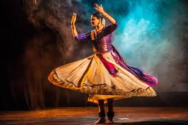

Exploring India's Culture and Heritage
Classical Dance Forms of India
In ancient times, Kathak was performed in temples as a form of devotion, especially in honor of Lord Krishna. Dancers used expressive gestures and graceful movements to depict stories of gods and goddesses. This early form was deeply spiritual and religious in nature.
Today, Kathak is performed all over the world and continues to grow. It is known for its elegant storytelling, precise footwork, fast spins, and expressive gestures. Whether performed in a traditional or modern setting, Kathak remains a powerful connection to India’s rich cultural past.
Kathak is one of the eight major classical dance forms of India, and its name comes from the Sanskrit word “Katha”, meaning story. It began as a form of storytelling by wandering bards or ‘Kathakars’, who traveled across northern India narrating stories from epics like the Mahabharata and Ramayana through music, dance, and facial expressions.
In ancient times, Kathak was performed in temples as a form of devotion, especially in honor of Lord Krishna. Dancers used expressive gestures and graceful movements to depict stories of gods and goddesses. This early form was deeply spiritual and religious in nature.
n the 20th century, Kathak was revived by passionate artists and scholars who reestablished it as a respected classical dance form. Institutions and dance schools helped train new generations of dancers. Famous gurus like Birju Maharaj, Shambhu Maharaj, and Sitara Devi played key roles in bringing Kathak to national and global stages.